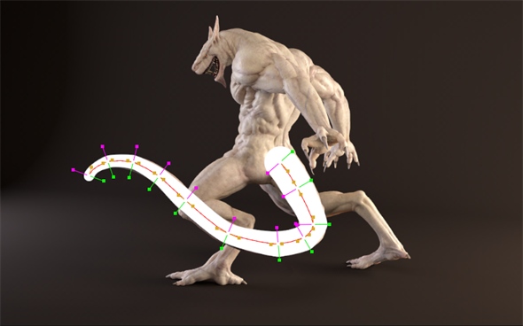
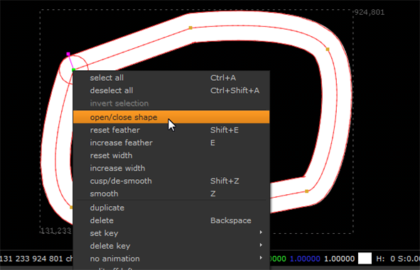
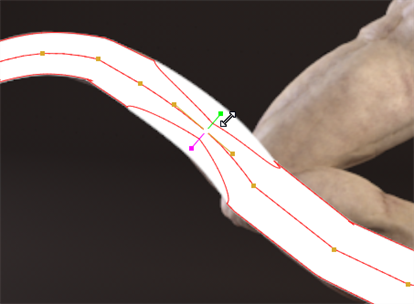
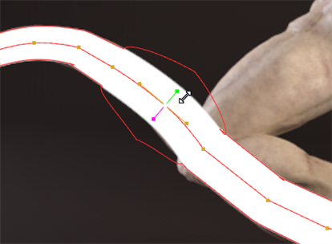
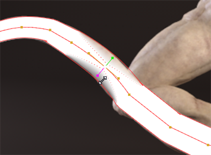

The Open Spline tool lets you draw curves in a similar way to other shapes, except that they don't need form a closed shape.
After creation, you can edit points on open splines using the standard smooth and transform handles, but they also have individual thickness and feather handles. The image shows an open spline and each point's smooth (orange), thickness (green), and feather (magenta) handles.
|
 |
|
Here, an open spline is used to roto a creature's tail. |
| 1. | Right-click the Bezier tool in the RotoPaint toolbar and select the Open Spline tool |
TIP: You can also press V, when the Viewer has focus, to cycle through the available tools.
| 2. | Select color, blending mode, opacity, and other settings applicable to all RotoPaint tool at the top of the Viewer. (For information on the available options, see Editing Existing Stroke/Shape Attributes.) |
RotoPaint has a few additional open spline-specific controls:
• width - controls the overall thickness of the spline.
• start type - sets the state of the first point in the spline to either rounded or square.
• end type - sets the state of the last point in the spline to either rounded or square.
| 3. | Click in the Viewer to place the starting point of the spline and then add the required number of points on the feature you're working on. |
| 4. | Press Return or select another tool to finish the open spline, |
OR
Click on the first point in the open spline to close the shape. Closed splines are not filled in the same way as other shape tools, such as Bezier and Ellipse. You can open a closed spline by right-clicking a point on the spline and selecting open/close shape.

| 5. | You can adjust the thickness and feather of individual points on the spline by selecting the required points and using the handles displayed in the Viewer. |
Drag the handle and release to apply the change to the selected points.
|
 |
 |
|
Decreasing and increasing spline thickness (green handle). |
|
|
 |
|
|
Decreasing and increasing feathering (magenta handle). |
|
| 6. | Optionally, set the lifetime of the shape in the RotoPaint tool settings. (For information on the available options, see Editing Existing Stroke/Shape Timing.) |
|
|